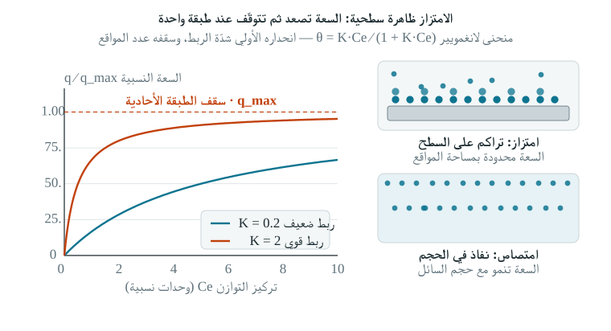

الامتزاز
Adsorption
الامتزاز هو تراكم جزيئات من غاز أو سائل عند سطحٍ يفصل بين طورين. ومن تطبيقاته التقاط بخار الماء على سطح هلام السيليكا.
تتجمع الجزيئات عند السطح عندما تؤثر فيها قوى تربطها به. ففي مجفّف يستخدم هلام السيليكا، يمر الهواء عبر حبيبات مسامية، ويتراكم بخار الماء على أسطحها الداخلية.
تُعبّر سعة الامتزاز عادةً عن كمية المادة المحتجزة لكل وحدة كتلة من المادة المازّة. وعند مقارنة سعتين، تُذكر درجة الحرارة وضغط البخار في حالة الغاز أو تركيز المادة في حالة المحلول. وفي بعض دورات التبريد بالامتزاز، يُستخدم التسخين لتحرير بخار الماء وتجديد المادة المازّة.
كيف تعمل الظاهرة؟
في الامتزاز الفيزيائي تحكم الظاهرة قوى تشتّت (فان دير فالس) وقطبية السطح، وطاقة الربط 5–40 كيلوجول لكل مول — من رتبة حرارة التكثيف — لذلك يزول بالحرارة والتخلية فيُستعاد السطح كما كان. أما الامتزاز الكيميائي فيتشارك فيه زوج إلكتروني أو يُكسر رابط، وطاقته 40–800 كيلوجول لكل مول، فتقارب طاقة الرابطة الكيميائية ولذلك قد يكون غير عكوس. والحالة الممتزّة تُعرَّف لا بالتصاق بل بارتفاع الكثافة عند السطح إلى أضعاف نظيرتها في سائل مشبع في الدرجة نفسها.
العلاقة بالأرقام
المحتوى الممتز q يُحسب بفرق التركيز: q = (C0 − Ce)·V/m، بالمول أو بالكتلة لكل كتلة ممتزّة. ونموذج لانغموير q = q_max·K_L·C_e/(1 + K_L·C_e) يفترض طبقة واحدة ومواقع متكافئة، ومنه تُستخرج المساحة السطحية؛ ومساحة الكربون المنشّط 500–2000 متر مربع للغرام، وسُمك الطبقة الأحادية لجزيء صغير نحو 0.3 نانومتر. وفي ديناميكا حرارية الامتزاز تُعادل حرارةُ الامتزاز 1.05–1.2 من حرارة التكثيف عند الدرجة نفسها، وهذا الرقم هو ما يحدّد مردود دورة التبريد بالامتزاز.
مفاهيم متقاربة
الامتزاز (adsorption) تراكم على الواجهة، والامتصاص (absorption) نفاذ إلى الحجم، والالتصاق الميكانيكي (adhesion) التحام سطحي بلا تراكم جزيئي. والخلط بين الأول والثاني يُفسد حسابات الأعمدة: الواجهة مساحة محدودة تجعل السعة نهايةً عليا صلبة (q_max)، بينما سعة الامتصاص تنمو مع حجم المذيب. وكذلك تُفصل «سعة السطح» عن «سعة المسام»: الأخيرة يحدّدها توزيع المسام بين الدقيقة والوسطى، وهو الذي يضبط انتقائية الجزء الممتز وسرعة انتشاره.
حدود التطبيق
لانغموير لا يصف الأسطح غير المتجانسة ولا التفاعل بين الجزيئات الممتزة المتجاورة، فيُستبدل بفريندليش (تجريبي ويفشل عند التشبّع) أو توك أو BET للطبقات المتعددة. والقياس نفسه محدود: حرارة الامتزاز ترفع حرارة العينة فتبدّل نقطة التوازن، والمسام الدقيقة دون 2 نانومتر تُسدّ فيقيس الجهاز الانتشار لا التوازن. وأي رقم سعة بلا ذكر الضغط والدرجة والرطوبة غير قابل للمقارنة ولا يُستشهد به.

| الكمية | القيمة | المصدر |
|---|---|---|
| حرارة الامتزاز الفيزيائي | 5–40 kJ/mol | [1] |
| مساحة سطح الكربون المنشّط | 500–2000 m²/g | [2] |
| سُمك الطبقة الأحادية النموذجي | ~0.3 nm | [2] |
المصادر
- 1 adsorption — IUPAC Compendium of Chemical Terminology (Gold Book) — IUPAC. goldbook.iupac.org/terms/view/A00155 · اطُّلع عليه 2026-11-14
- 2 Adsorption — physical and chemical processes — Encyclopaedia Britannica. www.britannica.com/science/adsorption · اطُّلع عليه 2026-11-14
استشهد بهذا المصطلح
الصيغتان مبنيتان من بيانات الصفحة نفسها: العنوان والتاريخ ورابط النسخة المنشورة.
الامتزاز — Adsorption. (2026). ديوان المعرفة — انفراد. https://infiradev.com/diwan/terms/adsorption.html
@misc{adsorption2026,
title = {الامتزاز},
titleaddon = {Adsorption},
howpublished = {{ديوان المعرفة — انفراد} — مرجع علمي عربي},
year = {2026},
url = {https://infiradev.com/diwan/terms/adsorption.html},
urldate = {2026-11-16},
note = {مراجعة علمية: عبدالله الهويدي — مراجعة في تطبيق انفراد}
}
راجعه: عبدالله الهويدي — مراجعة في تطبيق انفراد · 2026-11-16 · آخر تحديث 2026-11-17